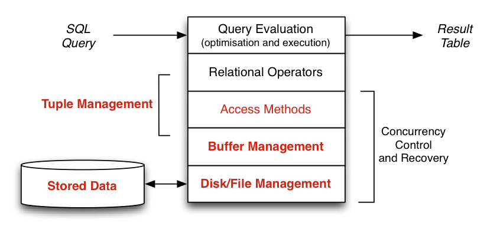
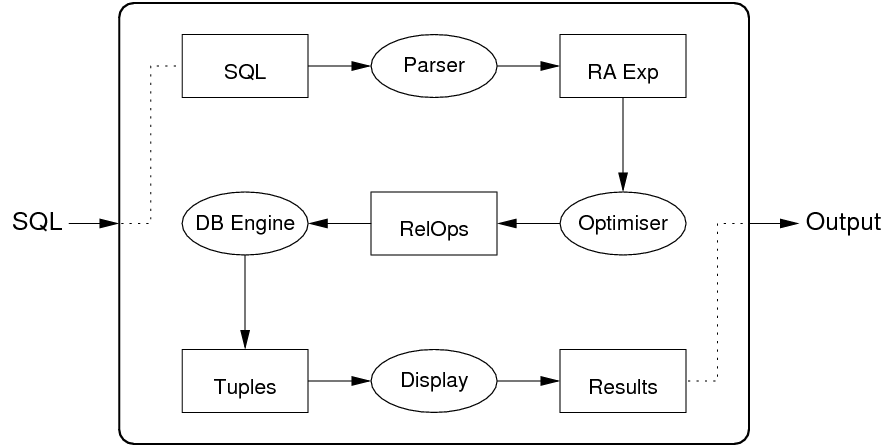

Back To Basics - Review notes on Database System Implementation I
Database is essentially a specialised file system that is exclusively designed for easily storing and retrieving data, especially for the latter, quickly getting the correct data that users want is critial. And on top of that, it defines the SQL language (best example of the domain specific language) to easily manipulate the data.
Database Implementation Layers
It typically has a couple of layers for the database system implementation, as the following figure shows:

Look it from the bottom up, I'll briefly talk about what each layer does.
- Stored Data: This is the hardware that really keep the data, nothing exciting for us here.
- Disk/File Management: This is usually done by the underlying Operating system's file system, in Postgres, it just directly uses the OS's readPage and writePage method when it needs to read/write data to the Disk. But some database vendor implements their own mechanism to the back-end directly, for example, Oracle has implemented one.
- Buffer Management: This is the middleman of database manipulating the disk, basically the database reads/writes a Tuple(record) from the Disk/File via the BufferManager.
- Access Method: This offers the methods like: get_tuple, next_tuple.
- Relational Operator: It is the implementation of operations like: Selection, Projection, Join, Set, Scanning, Sorting, Gropuing, Aggreation etc.
- Query Evaluation: It maps the SQL into its interal representation (Relational Algebra), and then rewritten the rules according to the Relational Algebra's law, pick up an optimised access method (e.g Plan) based on the Cost model, and then execute the plan.
overview
Before we go any further, we might need to introduce some terminologies that are used in the database field.
DB: database; Rel: Table; Page: content of disk block; Tuple: a record, or a row in the table.
Once users issue an SQL, the database will return a tuple (or a set of tuples) that are satisfied the SQL to the client. Two imporant Ids in the database are: PageId and TupleId
DBMS File Organisation
- A single very large file containing all DB data (e.g. SQLite)
- Multiple-file Disk Manager for DB data. (most of DBs). If system uses one file per table, PageId contains relation identifier(which can be mapped to filename) + page number (to identify page within file)
Buffer Pool
The aim of DBMS buffer pool is to reduce the number of disk reads and disk writes by holding many pages in memory for reuse, it sits between the 'Acess Method' and 'Disk/File Management' layer.
Page/Tuple Management
Database applications view data as a collection of records(tuples), and records can be accessed via a TupleId (aka RecordId or RID).
The Disk and buffer manager provides: 1) data is a sequence of fixed-size blocks(pages) 2) blocks can be (random) accessed via a PageId. 3) each block contains zero or more tuple values.
Relational Operations
Relational operations are the implmentations of selection, project, join, set operations and scanning, sorting, grouping, aggregation etc.
There are two "dimension of variation" here, one is relational operation (e.g. Selection, Projection, Join, Sort etc) and the other one is file structures (e.g. heap, indexed, hashed etc). Each query method involves an operator and a file structure: like primary-key selection on hashed file or indexed file, sort-merge join on ordered heap files, and two-dimensional range query on R-tree indexed file.
An important aspect of the Database is the analysis of cost of various query methods. Cost can be measured in terms following two:
- Time Cost: total time taken to execute method
- Page Cost: number of pages read and/or written
Three simple example of file structures:
- heap file: tuples added to any page which has space
- sorted file: tuple arranged in file in key order
- hash file: tuples placed in pages using hash function
Gone through the following operations:
- Scanning:
- Sorting: 2 way Merge Sort, N-way Merge Sort.
- Projection: Sort based Projection(needs only buffers, used by default), Hash based Projection(need buffers and good hash function), Index-only Projection (needs an appropriate index)
- Selection:
- Join:
Selection Relational Operation
- one dimensional selection(condition uses only 1 attribute)
- multi-dimensional selection (condition uses > 1 attribute)
- similarity selection (approximate matching, with ranking)
Two basic approaches for implementing the 'Select' efficiently:
- Physical arrangement of tuples. (sorting, hashing) There are Heap Files, Sorted Files and Hash Files. For hash files, we see both the simple Hash and Linear Hashing.
- additional indexing information (index files, signatures - superimposed, disjoint)
Indexing
Indexing is a very important feature in Database, because it can improve the time cost of selection dramatically, esepcially for the big data in each row. Indexes are stored in separate files to data.
A relation/file may have:
- A index on single attribute. (useful for handling primary/secondary key queries e.g. one, range)
- Separate indexes on many attributes. (useful for handling queries involving several fields)
- A combined index incorporating many attributes. (multi-dimensional indexing for e.g. spatial, multimedia databases)
Two types of index, one is Dense: one index entry per data tuple, the other one is Sparse: one index entry per data page (requires sorted data file).
The Index data structure could be one of the following:
- B-Tree Indexes
- Bitmap Indexes
- Tree indexes (kd-Trees, Quad Trees, R-Tree) Note: PostgreSQL is using GiST implemented the R-Tree since version 8.2
- Indexing with Signatures.
Join Relational Operation
Join is important and potentially expensive operation, many methods have been developed for its implementation. Some implementations are:
- Nested Loop Join
- Block Nested Loop Join
- Sort Merge Join
- Hash Join (variations: Simple Hash Join, Grace Hash Join, Hybrid Hash Join )
No single join algorithm is superior in some overall sense. Which algorithm is best for a given query depends on:
- sizes of relations being joined, size of buffer pool
- any indexing on relations, whether relations are sorted
- which attributes and operations are used in the query
- number of tuples in S matching each tuple in R
- distribution of data values (uniform, skew ...)
Choosing the "best" join algorithm is critical because the cost difference between best and worst case can be very large.
Query Processing/Evaluation
A query evaluator typically taking the declarative description of query (in SQL), determines plan for answering query and then executes method via DBMS engine to produce the result tuples. Following fingure is an internals of the query evaluation "black-box":

It parses the SQL into Relational Algebra, which is the internal representation, and then uses the algebraic laws on RA expression rewritten, use the cost based model to pick up a optimised plan as the access method, and then execute the plan and return the result tuples to the client.
Summary
From this course, I've mostly studied various data structures and algorithms to evalute the cost model of queries. As I said at the begining, the most important thing in database system is to keep the data in oder, while making the query as quick as possible. I didn't touch the transaction area in this one, and I'll write another dedicated entry for that topic.